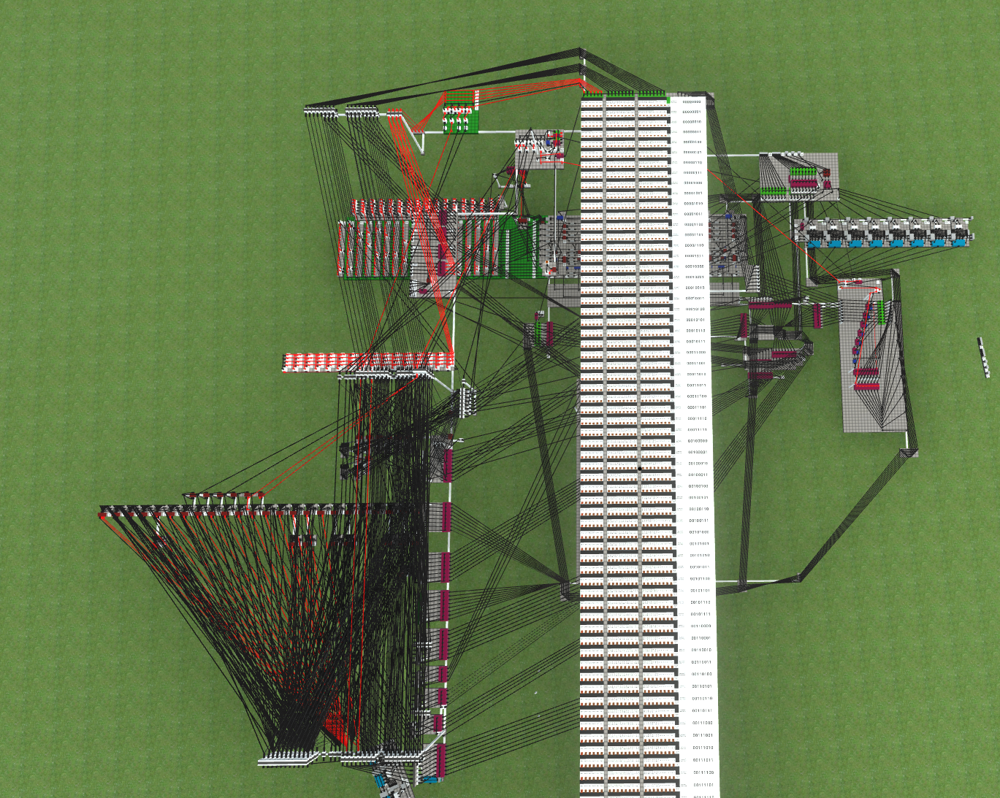

Lexi's Portfolio
Introduction
Name
Lexi Allen
Pronouns
She/They
Age
22 Years
Location
Georgia, United States
Studying
Computer Engineering
Email 1
Email 2
Last Updated
November 12th, 2025
FPGA Related Projects
Basys-3d
A very basic fixed function GPU/rendering pipeline on a Basys 3 FPGA Development Board, using
fixed point numbers for vertice positions and lighting/color calculations
Able to render as many polygons as can fit in RAM at higher than 60 FPS
GitHub Link (VHDL
Code)
GitHub Link (Tools
for interfacing with the board)
Note: I wrote this contemporaneously with the previous repository, the date of the repository is incorrect.
Vpe Serial Transciever
An implementation of a single wire serial data transmission protocol called "Vpe" or Variable Pulse Encoding, with a variable pulse width set by the length of the first pulse, where the symbols sent are encoded by a certain number of time frames low, followed by a certain number high. The length of the time frame being set by the first pulse in a data frame. Was able to hit the theoretical maximum data transfer rate with this board and design, around 10x slower than the clock rate of the board.
GitHub Link (VHDL Code and python code for interfacing with the board)
Senior Project (WIP)
Project Name
Aether Table
Project Description
A modular display system meant to be placed on top of a table for tabletop roleplaying game
sessions, used for displaying things like maps, and tokens on top of those maps.
Will automatically reconfigure the display positioning when the displays that are part of it are
moved around in relation to eachother, using hall effect sensors and electromagnets.
It will also have a web app for both gamemasters and players to interact with the display, and
store character/npc information for ease of access.
In essence, it is bringing the features of a virtual table top onto a physical tabletop.
Proof of concept demonstration
This video shows a demonstration of the aforementioned reconfiguring capabilities of the project using hall effect sensors.
KSP2 Modding Related Projects
SpaceWarp
I am the lead maintainer of the modloader project for KSP2 known as Space Warp, it is built off of BepInEx, but on top of that provides many KSP2 Specific Utilities for modding. This modloader has been used in the creation of the majority of mods for KSP2.
GitHub LinkSpaceWarp.Template Pipelines
I was involved in the creation of the modding template for SpaceWarp, a project that has made it quite easy for anyone to create a repository from the template, and create their own mods. My specific involvement here was the addition of release pipelines for GitHub that automated the process uploading the built mod files and pushing them to SpaceDock, a mod distribution site for KSP1/2.
GitHub LinkKSP2 Unity Tools
KSP2Unity Tools is a unity based SDK for creating parts and other assets for KSP2 mods, it also includes a lot of utilities like custom editors for common types, and a build/test pipeline to easily test your mod.
With my work for it for KSP2 Redux, it becomes the fully featured SDK for creating all types of mods, and can test the mods in the editor being able to load mod dependencies in the editor as well.
GitHub LinkPatch Manager
Patch Manager is a spiritual successor to Module Manager, allowing modders to patch any JSON definition within KSP2 using a bespoke SCSS based DSL for writing the patches. It is used in many KSP2 mods that need to add stuff to the tech tree or parts or in basically any place.
Documentation of the languageGitHub Link
KSP2 Redux
KSP2 is a comprehensive mod update/overhaul of KSP2 with the aim of bringing the community features that were promised for KSP2 before it was abandoned.
I am one of the leads on this project, my role being to integrate the modloader into the game, which is based off of Space Warp, and to then also update all the modding tools for use with KSP2 Redux, and make them nicer to use.
For example: I have implemented a completely custom mission editor for the KSP2 Redux version of KSP2UnityTools.
Other Modding Projects
KSA Loader
KSA Loader is a very simple harmony based mod injector for the in development game "Kitten Space Agency".
GitHub LinkPremonition
Premonition is a Harmony inspired monkey patching library for C# modding purposes. It works using Mono.Cecil to rewrite methods in assemblies before they are loaded by the assembly loader. This provides a distinct benefit over Harmony as it can target many methods Harmony cannot, such as virtual base methods, or inline methods.
GitHub LinkCheese Util Mod
Cheese Util Mod is a mod for a game known as Logic World that provides a lot of utilities for people designing projects in there, like screens and memory storage. It is one of the most used mods for Logic World
GitHub LinkOther Related Projects
TOML Resume
TOML Resume is an ASP.net based server that serves a resume as a static HTML file + CSS built from a TOML file using a view.
GitHub LinkCheesyRegex
Cheesy Regex is a completely custom implementation of Compiled Regexes in C# that I wrote, it also has utilities for generating Mermaid diagrams from regexes. It uses the Cheese.IlGen library for C# dynamic IL generation that I wrote
GitHub LinkNote: The date of this repository is incorrect, I wrote this in November of 2024.
Cheese.IlGen
Cheese.IlGen is a library for dynamically generating C# IL using a builder pattern, for use with System.Reflection.Emit and dynamic assemblies.
GitHub LinkC3Cubed
C3Cubed was a library written in C3 for generating QBE IR code for use in programming language implementation.
GitHub LinkLexi Fantasy CPUs
This is a library for implmenting fantasy CPU emulators in Rust, it currently contains a reference implementation of a 6502 emulator.
GitHub LinkNote: The date of this repository is incorrect, I wrote this in April of 2025
Rust 6502 OS
An OS written entirely in 6502 assembly for the project mentioned before this one, it is styled after dos and has fs routines and can load programs off of the disk.
GitHub LinkNote: The date of this repository is incorrect, I wrote this in April of 2025
Noodle Processing Unit
The Noodle Processing Unit was an 8 bit computer designed in a game/logic simulator known as Logic World, around October of 2021.
This video shows the Noodle Processing Unit doing the fibonacci sequence in hexadecimal
The noodle processing unit from above
WIP/Old Projects
Blocks.Net
Blocks.Net is a C# implementation of a Minecraft Server that I am working on with one other, it is meant to eschew the idea of "vanilla" minecraft and treat the server as a multiplayer game framework.
GitHub LinkCheese Programming Language
The Cheese Programming language is my own compiled programming language that I have been working on and off on in a while
GitHub LinkNote: I am currently designing a complete reimplementation, so this repository is quite old.